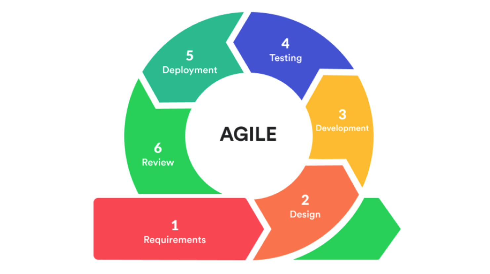
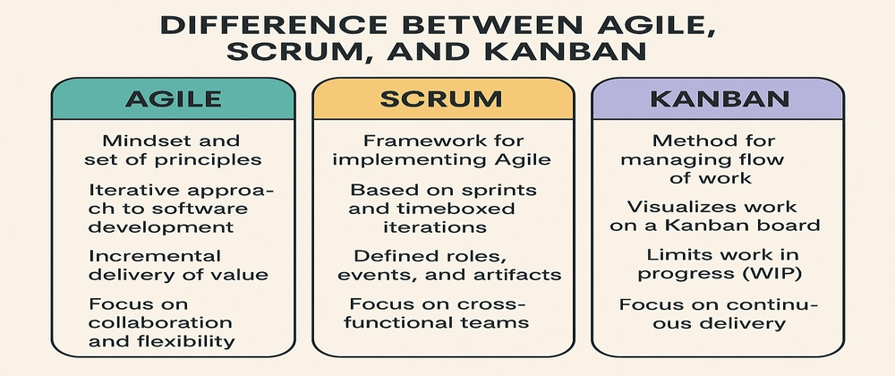

Session 0 — Agile Foundations & Tool Setup (Slack + Taiga + GitHub)¶
Format
2h theory + 2h lab · Team size: 10 (each team = a mini‑company inside TechOps Inc.)
Tools: Slack, Taiga, GitHub · Output: Working Slack workspace + Taiga project + Sprint‑1 plan + Team repo
Objectives¶
- Explain Agile values & principles, and the differences between Scrum and Kanban in the context of IT Infrastructure & DevOps.
- Set up team collaboration tools: Slack (ChatOps) and Taiga (Agile project management).
- Create a syllabus‑mapped backlog and plan Sprint 1 (Sessions 6–9).
- Establish working agreements, roles, and a definition of done (DoD) for the team.
- Prepare a GitHub team repo structure that will be used throughout the course.
Theory Summary (Agile for Infra & DevOps)¶
Agile emerged to counter rigid, plan‑heavy delivery models that struggled with uncertainty. In Dev and Ops contexts, Agile is less about speed for its own sake and more about short feedback loops, visibility, and continuous improvement. We’ll use Agile to coordinate complex work across infrastructure, cloud, and DevOps pipelines.
Agile values emphasize individuals & interactions, working solutions, customer collaboration, and responsiveness to change. In our setting, “customer” = your stakeholders: internal teams, instructors, and demo audiences. Principles like frequent delivery, technical excellence, and sustainable pace map well to infrastructure work: small increments (e.g., baseline VM image), validated frequently (checkpoints), and continuously improved (automation).
Scrum fits when you have a well‑defined increment and cadence: plan a sprint (2–3 weeks), hold a daily stand‑up (async in Slack), and aim for a potentially shippable increment (e.g., Infra Blueprint by Session 9). Roles are flexible here: a Project Lead plays Scrum Master‑like facilitation; the Instructor is close to Product Owner; the team is the cross‑functional developers (DevOps, Cloud, Security, Monitoring, Storage/Network).
Kanban suits ongoing ops (tickets, incidents, enhancements). You’ll use Kanban columns (To Do → In Progress → Review → Done) with WIP limits to prevent overload while doing labs and hardening.
In DevOps culture, ChatOps (tooling + conversation) turns Slack into the central nervous system: GitHub PRs, Jenkins builds, monitoring alerts, and Taiga updates surface in channels so decision‑making is transparent and fast. Taiga anchors planning and tracking: epics for phases (Infra, Cloud, DevOps, CI/CD, Security/HA), stories for sessions, and tasks for lab steps. Your Definition of Done ensures quality (docs/screenshots/automation checked in, peer review done, Taiga story moved to Done, Slack summary posted).
Key benefits you’ll feel immediately:
- Visibility: everyone sees who’s doing what, what’s blocked, and what’s next.
- Traceability: each lab deliverable ties to a Taiga story and a GitHub PR.
- Incremental progress: you’ll produce checkpoints that layer into the final demo.
Agile¶
Agile is a way of working that delivers value in small, useful slices, learning from feedback quickly, and adapting plans as we go. Instead of locking a big plan for months, Agile asks:
“What’s the next most valuable thing we can deliver in the next short cycle?”
Core ideas - Deliver in small batches (1–2 week cycles). - Focus on customer/stakeholder value. - Gather fast feedback and adapt. - Encourage collaboration across teams. - Respond to change instead of resisting it.
Everyday Example
You’re building a college fest website.
- Week 1: deliver the schedule page.
- Week 2: add speaker bios.
- Week 3: add ticketing.
After week 1, you learn most users are on mobile, so you adjust next week’s plan to improve mobile experience.
→ That’s Agile: deliver → learn → adjust.
¶
Agile Methodologies: Scrum and Kanban¶
Agile is the philosophy. Scrum and Kanban are two popular ways to implement it.
Scrum (time-boxed approach)¶
- Sprints: Short, fixed-length cycles (1–3 weeks).
- Roles:
- Product Owner (sets priorities)
- Scrum Master (facilitates, removes blockers)
- Development Team (does the work)
- Events: Sprint Planning, Daily Stand-ups, Sprint Review, Retrospective.
- Artifacts: Product Backlog, Sprint Backlog, Increment.
Scrum Example
A team promises: “In 2 weeks, we’ll deliver a baseline VM image.”
- They sync daily for 15 min.
- At sprint end, they demo the VM and get feedback: “please add curl and htop.”
- Next sprint, they adjust accordingly.
Kanban (flow-based approach)¶
- Visualize work on a board (To Do → In Progress → Done).
- Limit Work-In-Progress (WIP) to avoid multitasking chaos.
- Measure flow: cycle time (start to finish), throughput (items/week).
Kanban Example
An ops team gets requests: create users, patch servers, rotate keys.
- They allow only 3 tasks max “In Progress”.
- When one finishes, they pull the next.
→ Result: fewer half-done tasks, faster average completion.
Scrum vs Kanban (at a glance)¶
| Scrum | Kanban |
|---|---|
| Works in fixed sprints | Works in continuous flow |
| Team commits to a sprint goal | Team pulls tasks as capacity frees |
| Best for project-style work | Best for ongoing ops/support |

Lean¶
Lean focuses on maximizing value while eliminating waste.
Originating in Toyota’s production system, it maps perfectly to IT and DevOps.
Three enemies in Lean - Muda (Waste) – unnecessary work, delays, rework. - Mura (Unevenness) – workload peaks/valleys causing churn. - Muri (Overburden) – overloading people/systems.
Five Lean Principles
1. Specify value (from customer’s viewpoint).
2. Map the value stream (all steps from request → delivery).
3. Create flow (remove bottlenecks and stops).
4. Establish pull (work only when demand exists).
5. Seek perfection (continuous improvement).
Common wastes in IT/DevOps
- Waiting (e.g., PR sits 3 days unreviewed).
- Rework (build breaks due to inconsistent environments).
- Overprocessing (writing 30-page docs no one reads).
- Overproduction (building features/scripts nobody uses).
- Inventory/WIP (10 half-done tasks, nothing delivered).
- Motion/context switching (jumping across 6 tools).
- Unused talent (infra engineers excluded from design).
Implementation of Lean (DevOps context)¶
- Define value clearly (e.g., “a secure, ready-to-use VM by Friday”).
- Map the value stream (all steps request → running system).
- Measure baseline (lead time, cycle time, MTTR).
- Remove waste (standard templates, automation, smaller batches).
- Introduce pull (WIP limits, visualize queues).
- Make problems visible (dashboards, blocked items).
- Continuous improvement (small retrospectives after each delivery).
Mini Case
Goal: Deliver a sandbox VM in 48 hours.
- Old: approval wait 2 days + manual provisioning → often rework.
- Lean: pre-approved hardened template + self-service request.
→ Delivery in hours, fewer defects, happier devs.
Lean and Agile in DevOps¶
- Agile = what to build next (short cycles, priorities).
- Lean = how to deliver efficiently (cut waste, improve flow).
- DevOps = culture + automation bridging Dev & Ops.
Practical intersections
- Agile sprints + Lean small batches → CI/CD pipelines.
- Lean “reduce handoffs” + Agile “cross-functional teams” → fewer silos.
- Limit WIP + short sprints → steadier throughput.
- Retrospectives (Agile) + Kaizen (Lean) → continuous improvement.
DevOps practices showing Lean + Agile
- Small PRs + trunk-based development.
- Automated testing & deployments.
- Infrastructure as Code (standardization).
- Feature flags (safe incremental releases).
- Observability (metrics, logs, traces → faster recovery).
Real-world Outcome
A team moves from monthly deployments to twice a week by:
- Using Agile sprints (1 feature/week).
- Applying Lean (limit WIP, automate tests).
Result: smaller, safer deployments, faster recovery, less stress.
Key Takeaways¶
- Agile = deliver value in small increments, adapt quickly.
- Scrum = structured sprints, Kanban = continuous flow.
- Lean = maximize value, eliminate waste.
- Lean + Agile = DevOps culture, powered by automation and feedback.
Practical Application (TechOps Inc. Simulation)¶
Scenario: You’ve just joined TechOps Inc. as a 10‑person platform team. You have four weeks to deliver the first milestone: Infra Blueprint (Sessions 6–9). Today you will create your communication hub, project board, repo, and a working plan for Sprint‑1.
Lab Guide (2h)¶
A. Slack Workspace (ChatOps) — 25 min¶
- Create or join the course Slack workspace.
- Create channels:
#announcements(read‑only for instructors)#helpdesk(Q&A with instructors)#team-<company-name>(private team channel)- Optional cross‑team:
#devops,#cloud,#storage,#monitoring - Add integrations (you can wire these fully in later sessions):
- GitHub: repo notifications to
#team-<company-name> - Taiga: story updates →
#team-<company-name> - Pin a Team Charter (copy, edit, and post):
- Team name, members & roles (Cloud Architect, SysAdmin, DevOps x2, Developers x2, Security, Monitoring, Storage/Network, Project Lead)
- Working hours, response times
- Stand‑up time (async template: Yesterday / Today / Blockers)
- Definition of Done (see template below)
DoD template (pin this):
- Code/config committed with README and comments
- Steps reproducible; credentials redacted; screenshots added
- PR raised & reviewed by ≥1 peer
- Taiga story moved to Done with link to PR and short summary
- Slack update posted (#team-...): what changed, who reviews, where to test
B. Taiga Project — 35 min¶
- Create a Taiga project: TechOps Inc. – Company
- Create Epics (map to course phases):
- Infra Foundations (S6–S9)
- Virtualization & Cloud (S10–S13)
- DevOps Foundations (S14–S17)
- CI/CD & Monitoring (S18–S20)
- Security & HA (S21–S23)
- Create User Stories for Sprint‑1 (Sessions 6–9). Suggested set:
- S6: Baseline VM image (Linux/Windows), snapshot strategy
- S7: Data center layout & constraints doc
- S8: NAS (TrueNAS CORE) for team file sharing
- S9: SAN (iSCSI) for VM cluster
- Break stories into Tasks (examples):
- Download Ubuntu LTS ISO; create VM (2 vCPU/4GB/40GB)
- Install base packages + updates; create
baseline-v1snapshot - Deploy TrueNAS VM; configure share; test from team VM
- Configure iSCSI target; connect initiator; validate block storage
- Add Definition of Done at project level (and link to the Slack post).
- Set Sprint‑1 dates (cover S6–S9 timeline); assign story owners; estimate points.
(Optional) CSV import: you can prepare a CSV of stories/tasks to import into Taiga if you prefer. Keep a copy in docs/assets/taiga-backlog/.
C. GitHub Team Repo — 35 min¶
- Create a repo (private or internal):
techops-<company-name>. - Add this starter structure:
├── infra/ │ ├── vm-baseline/ │ ├── nas-truenas/ │ └── san-iscsi/ ├── cloud/ ├── app/ ├── cicd/ ├── monitoring/ ├── security/ └── docs/ ├── lab-notes/ └── diagrams/ - Add a root README.md with:
- Team roster & roles
- How to clone & run labs
- Links to Slack channel & Taiga board
- Create a
docs/lab-notes/session-06.mdfile and add checklists for VM setup. - Set up branch protection (require PR review by at least one teammate).
- Connect GitHub → Slack notifications to your team channel.
D. Sprint Planning — 25 min¶
- Capacity: note each member’s realistic hours for the sprint.
- Prioritize stories for S6–S9; split if too big (aim for 1–3 days per story).
- Assign owners; confirm acceptance criteria align with DoD.
- Add risk/assumption notes: ISO availability, network limits, hardware quotas.
- Post the Sprint plan summary in Slack and pin it.
Checkpoints (end of session)¶
- Slack workspace & team channel ready; Team Charter pinned
- Taiga project created with Epics, Stories (S6–S9), Tasks, Sprint‑1 dates
- GitHub repo created with agreed folder structure + initial README
- Definition of Done documented and referenced in both Slack & Taiga
- Sprint‑1 plan posted in Slack (owner per story + acceptance criteria)
Quick Quiz (knowledge check)¶
Which Agile practice best ensures visibility of daily progress and blockers?
- Daily stand‑ups (async in Slack)
- Quarterly release planning
- Post‑mortems only after failures
- Annual performance reviews
In this course, who is closest to the Product Owner role?
- Instructor (defining outcomes & acceptance)
- Security Engineer
- Project Lead
- Cloud Architect
What belongs in our Definition of Done (pick all that apply)?
- Reproducible steps & docs in repo
- PR reviewed by a teammate
- Taiga story moved to Done with links
- Only a verbal confirmation in class
Deliverables (to be graded)¶
- Slack: Link to team channel + pinned Team Charter & DoD
- Taiga: Project URL + screenshot of Sprint‑1 board
- GitHub: Repo URL + screenshot of repo structure
- Sprint‑1 plan: Short note in Slack with owners & dates
References/Self Study (YouTube / Slides)¶
You can drop these into this page later: